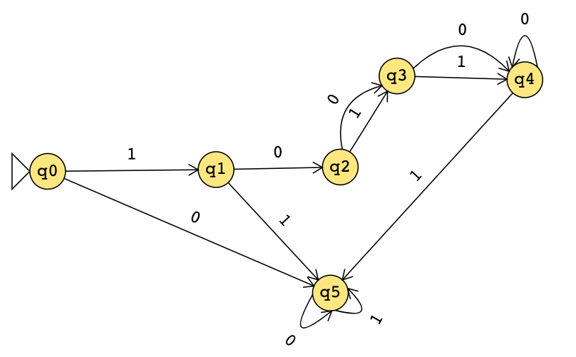
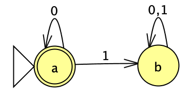

HW1 : Regular Expressions and Deterministic Finite
AutomataHW2 : Regular Languages and Automata ConstructionsHW3 :
Nonregular Languages and Pushdown AutomataHW4: Context-free Languages
and Turing MachinesHW5: Recognizability, Decidability, Undecidability,
and ReductionsProjectProject - CSE 105 Spring 2022Project - CSE 105
Spring 2022
CSE105Sp22
Due: : 4/7/22 at 5pm (no penalty late submission until
8am next morning), via GradescopeDue: : 4/14/22 at 5pm (no penalty late
submission until 8am next morning), via GradescopeDue: 4/28/22 at 5pm
(no penalty late submission until 8am next morning), via GradescopeDue:
5/5/22 at 5pm (no penalty late submission until 8am next morning), via
GradescopeDue: 5/26/22 at 5pm (no penalty late submission until 8am next
morning), via GradescopePart 1 due TBA; Part 2 due TBA; Part 3 due
TBAPart 2 due 5/19/22 at 5pm (no penalty late submission until 8am next
day)Part 3 due 6/2/22 at 5pm (no penalty late submission until 8am next
day)
In this assignment,
You will practice reading and applying the definitions of alphabets,
strings, languages, Kleene star, and regular expressions. You will use
regular expressions and relate them to languages and automata. You will
use precise notation to formally define the state diagram of DFA, and
you will use clear English to describe computations of DFA
informally.
Resources: To review the topics you are
working with for this assignment, see the class material from Week 1. We
will post frequently asked questions and our answers to them in a pinned
Piazza post.
Reading and extra practice problems:
Sipser Section 0, 1.3, 1.1. Chapter 1 exercises 1.1, 1.2, 1.3, 1.18,
1.23.
For all HW assignments:
Weekly homework may be done individually or in groups of up to 3
students. You may switch HW partners for different HW assignments. The
lowest HW score will not be included in your overall HW average. Please
ensure your name(s) and PID(s) are clearly visible on the first page of
your homework submission and then upload the PDF to Gradescope. If
working in a group, submit only one submission per group: one partner
uploads the submission through their Gradescope account and then adds
the other group member(s) to the Gradescope submission by selecting
their name(s) in the “Add Group Members" dialog box. You will need to
re-add your group member(s) every time you resubmit a new version of
your assignment. Each homework question will be graded either for
correctness (including clear and precise explanations and justifications
of all answers) or fair effort completeness. You may only collaborate on
HW with CSE 105 students in your group; if your group has questions
about a HW problem, you may ask in drop-in help hours or post a private
post (visible only to the Instructors) on Piazza.
All submitted homework for this class must be typed. You can use a
word processing editor if you like (Microsoft Word, Open Office,
Notepad, Vim, Google Docs, etc.) but you might find it useful to take
this opportunity to learn LaTeX. LaTeX is a markup language used widely
in computer science and mathematics. The homework assignments are typed
using LaTeX and you can use the source files as templates for
typesetting your solutions. To generate state diagrams of machines, we
recommend using Flap.js or JFLAP. Photographs of clearly hand-drawn
diagrams may also be used. We recommend that you submit early drafts to
Gradescope so that in case of any technical difficulties, at least some
of your work is present. You may update your submission as many times as
you’d like up to the deadline.
Integrity reminders
Problems should be solved together, not divided up between the
partners. The homework is designed to give you practice with the main
concepts and techniques of the course, while getting to know and learn
from your classmates.
You may not collaborate on homework with anyone other than your
group members. You may ask questions about the homework in office hours
(of the instructor, TAs, and/or tutors) and on Piazza (as private notes
viewable only to the Instructors). You cannot use any online
resources about the course content other than the class material from
this quarter – this is primarily to ensure that we all use consistent
notation and definitions we will use this quarter and also to protect
the learning experience you will have when the ‘aha’ moments of solving
the problem authentically happen.
Do not share written solutions or partial solutions for homework
with other students in the class who are not in your group. Doing so
would dilute their learning experience and detract from their success in
the class.
You will submit this assignment via Gradescope (https://www.gradescope.com) in the
assignment called “HW1CSE105Sp22”.
Assigned questions
(Graded for correctness1)
For \(L\) a set of strings over the
alphabet \(\{0,1\}\), we can define the
following associated sets \[LZ(L) = \{ 0^k w
\mid w \in L, k \in \mathbb{Z}, k \geq 0 \}\]\[TZ(L) = \{ w 0^k \mid w \in L, k \in \mathbb{Z},
k \geq 0 \}\]
Note: the commas in the set-builder definition indicate “and”.
Note: \(0^k\) is the result of
concatenating \(0\) with itself \(k\) times; it is the string of \(k\)\(0\)s.
Note: Formally, \(LZ\) and \(TZ\) are each functions, with domain the
set of languages over \(\{0,1\}\) and
with codomain the set of languages over \(\{0,1\}\).
Specify an example language \(L_1\) over \(\{0,1\}\) where \(LZ(L_1) = \Sigma^*\), or explain why there
is no such example. A complete solution will include either (1) a
precise and clear description of your example language \(L_1\) and a precise and clear description
of the result of computing \(LZ(L_1)\)
using the definitions to justify this description and justifying the set
equality with \(\Sigma^*\), or (2) a
sufficiently general and correct argument why there is no such example,
referring back to the relevant definitions.
Specify an example language \(L_2\) over \(\{0,1\}\) where \(LZ(L_2)\) is a finite set, or explain why
there is no such example. A complete solution will include either (1) a
precise and clear description of your example language \(L_2\) and a precise and clear description
of the result of computing \(LZ(L_2)\)
using the definitions to justify this description and justifying why it
is finite, or (2) a sufficiently general and correct argument why there
is no such example, referring back to the relevant definitions.
Specify an example language \(L_3\) over \(\{0,1\}\) where \(LZ(L_3) = TZ(L_3)\), or explain why there
is no such example. A complete solution will include either (1) a
precise and clear description of your example language \(L_3\) and a precise and clear description
of the results of computing \(LZ(L_3)\)
and \(TZ(L_3)\) using the definitions
to justify this description and justifying the set equality, or (2) a
sufficiently general and correct argument why there is no such example,
referring back to the relevant definitions.
(Graded for correctness) Consider the two
regular expressions over \(\Sigma = \{ 0, 1
\}\)\[R_1 = (~(000 \cup 111)^* ~\cup~
(01)^*~)
\qquad \qquad
R_2 = (~(000)^*(111)^* (\varepsilon \cup 0\cup1))\] You will
prove that \[L(R_1) \not \subseteq L(R_2) ~
\text{and} ~ L(R_2) \not \subseteq L(R_1)
~ \text{and} ~ L(R_1) \cap L(R_2) \neq \emptyset
~ \text{and} ~ L(R_1) \cup L(R_2) \neq \Sigma^*\] by giving four
example strings that witness these properties.
Specify an example string \(w_1\) such that \(w_1 \in L(R_1) \cap L(R_2)\). Briefly
justify your choice, referring to the definitions of the regular
expressions and their semantics.
Specify an example string \(w_2\) such that \(w_2 \in L(R_1) \cap \overline{L(R_2)}\).
Briefly justify your choice, referring to the definitions of the regular
expressions and their semantics.
Specify an example string \(w_3\) such that \(w_3 \in \overline{L(R_1)} \cap L(R_2)\).
Briefly justify your choice, referring to the definitions of the regular
expressions and their semantics.
Specify an example string \(w_4\) such that \(w_4 \in \overline{L(R_1)} \cap
\overline{L(R_2)}\). Briefly justify your choice, referring to
the definitions of the regular expressions and their semantics.
Pick a four letter alphabet (a nonempty finite set), and specify
it, e.g. by filling in the blank \(\Sigma
= \underline{\text{fill in your alphabet here}}\).
Then, pick a language of cardinality (size) \(2\) over this alphabet, and specify it,
e.g. by filling in the blank \[L
= \underline{\text{fill in your language here}}\]Note: we encourage you to pay attention to syntax here. There
are many correct answers; please be precise in how you present the sets
you choose.
Give a regular expression that describes the language \(L\) you defined in part (a). Briefly
justify why your regular expression works.
Give a DFA that recognizes your language \(L\) you defined in part (a). Specify your
DFA both using a formal definition
and a state diagram. Briefly justify why
your DFA works.
(Graded for correctness) Consider the DFA
\(C\) given by the state diagram
below.

State diagram for DFA \(C\)
Suppose someone tells you that the formal definition of this DFA is
\[(Q, \Sigma, \delta, q_0, F) = (\{ q0, q1,
q2, q3, q4, q5 \}, \{0,1,2\}, \delta, q0, q0)\] where \(\delta: Q \times \Sigma \to Q\) is given by
\[\hspace{-1in}\delta ( (q, 0) ) =
\begin{cases}
q5 & \text{if $q=q0$} \\
qj & \text{if $q=qi$ and $i \in \{1,2,3\}$ and $j=i+1$} \\
q & \text{if $q \in \{q4,q5\}$} \\
\end{cases} \qquad \delta ( (q, 1) ) = \begin{cases}
q1 & \text{if $q=q0$} \\
q5 & \text{if $q \in \{q1,q4,q5\}$} \\
\delta( (q,0) ) & \text{if $q=q2$ or $q=q3$} \\
\end{cases}\]
Confirm that this formal description is correct (in that it is
consistent with the state diagram), or fix any and all mistakes in it.
In your solution, explicitly address whether the description of the set
of states is correct, whether the description of the alphabet is
correct, whether the description of the transition function is correct,
whether the description of the start state is correct, and whether the
description of the accept states is correct, and why.
Modify the set of accept states of this state diagram to get a
different DFA (with the same set of states, alphabet, start state, and
transition function) that recognizes an infinite language. Your solution
should include the diagram of this new DFA and an explanation of why the
language it recognizes is infinite.
(Graded for fair effort completeness) Which
of the following are valid descriptions using the terminology we have
used in class and in the book so far? For those that aren’t, explain
what’s wrong. For those that are, give an example of what’s being
described.
A finite automaton accepts a regular expression.
The language described by a regular expression is a finite
automaton.
The empty string is the language of some regular
expression.
A string of length one uses one symbol from the
alphabet.
The input string runs a finite automaton.
In this assignment,
You will practice designing multiple representations of regular
languages and working with general constructions of automata to
demonstrate the richness of the class of regular languages.
Resources: To review the topics you are
working with for this assignment, see the class material from Week 1 and
the start of Week 2. We will post frequently asked questions and our
answers to them in a pinned Piazza post.
Reading and extra practice problems:
Sipser Section 1.1, 1.2, 1.3. Chapter 1 exercises 1.4, 1.5, 1.6, 1.7,
1.8, 1.9, 1.10, 1.11, 1.12, 1.14, 1.15, 1.16, 1.17, 1.19, 1.20, 1.21,
1.22.
Key Concepts: Regular expressions,
language described by a regular expression, deterministic finite
automata (DFAs), regular languages, closure of the class of regular
languages under certain operations, nondeterministic finite automata
(NFA).
For all HW assignments:
Weekly homework may be done individually or in groups of up to 3
students. You may switch HW partners for different HW assignments. The
lowest HW score will not be included in your overall HW average. Please
ensure your name(s) and PID(s) are clearly visible on the first page of
your homework submission and then upload the PDF to Gradescope. If
working in a group, submit only one submission per group: one partner
uploads the submission through their Gradescope account and then adds
the other group member(s) to the Gradescope submission by selecting
their name(s) in the “Add Group Members" dialog box. You will need to
re-add your group member(s) every time you resubmit a new version of
your assignment. Each homework question will be graded either for
correctness (including clear and precise explanations and justifications
of all answers) or fair effort completeness. You may only collaborate on
HW with CSE 105 students in your group; if your group has questions
about a HW problem, you may ask in drop-in help hours or post a private
post (visible only to the Instructors) on Piazza.
All submitted homework for this class must be typed. You can use a
word processing editor if you like (Microsoft Word, Open Office,
Notepad, Vim, Google Docs, etc.) but you might find it useful to take
this opportunity to learn LaTeX. LaTeX is a markup language used widely
in computer science and mathematics. The homework assignments are typed
using LaTeX and you can use the source files as templates for
typesetting your solutions. To generate state diagrams of machines, we
recommend using Flap.js or JFLAP. Photographs of clearly hand-drawn
diagrams may also be used. We recommend that you submit early drafts to
Gradescope so that in case of any technical difficulties, at least some
of your work is present. You may update your submission as many times as
you’d like up to the deadline.
Integrity reminders
Problems should be solved together, not divided up between the
partners. The homework is designed to give you practice with the main
concepts and techniques of the course, while getting to know and learn
from your classmates.
You may not collaborate on homework with anyone other than your
group members. You may ask questions about the homework in office hours
(of the instructor, TAs, and/or tutors) and on Piazza (as private notes
viewable only to the Instructors). You cannot use any online
resources about the course content other than the class material from
this quarter – this is primarily to ensure that we all use consistent
notation and definitions we will use this quarter and also to protect
the learning experience you will have when the ‘aha’ moments of solving
the problem authentically happen.
Do not share written solutions or partial solutions for homework
with other students in the class who are not in your group. Doing so
would dilute their learning experience and detract from their success in
the class.
You will submit this assignment via Gradescope (https://www.gradescope.com) in the
assignment called “HW2CSE105Sp22”.
Assigned questions
(Graded for correctness3)
Over the alphabet \(\{a,b\}\), consider
the language \[L = \{ w \in \{a,b\}^* \mid
(ab \textrm{ is a substring of $w$}) \land (ba \textrm{ is a substring
of $w$})
\land (w \textrm{ starts with } a)\}\] In this question, you
will use two different approaches to proving that this language is
regular by building (different) DFA that recognize this language.
Design a DFA recognizing the language \(\{ w \in \{a,b\}^* \mid ab \textrm{ is a substring
of $w$}\}\) and a DFA recognizing the language \(\{ w \in \{a,b\}^* \mid ba \textrm{ is a substring
of $w$}\}\) and a third DFA recognizing the language \(\{ w \in \{a,b\}^* \mid w \textrm{ starts with }
a\}\). Then, use the construction we discussed in class to
combine these DFA to get a DFA that recognizes \(L\). A complete solution will include the
(clearly labelled) state diagrams for each of the three building-block
DFAs, along with a description of the result of combining these DFAs
that includes the formal definition of the resulting DFA and at the
least the part of the state diagram that includes the start state, all
the outgoing edges from the start state, and specifies how many states
the full DFA will have.
Rewrite the language \(L\) in a
simpler form and use this simpler form to design a DFA with at most
\(5\) states that recognizes \(L\). A complete solution will include the
complete state diagram of this DFA and a justification for why the DFA
recognizes \(L\).
To safeguard the privacy or security of a network, some software
filters the IP addresses that are allowed to send content to computers
on the network. Each IP address can be broken into parts that represent
the source host of incoming traffic, including geographic data. As a
result, software needs to be designed to recognize whether certain
substrings (representing permitted hosts) are present (if the hosts are
permitted to send data) and whether others are absent (if those hosts
are blocked from sending data).
In this question, you’ll design ways to detect these patterns in
strings.
(Graded for correctness) Over the alphabet
\(\{0,1,2,3,4,5,6,7,8,9\}\) design a
DFA that accepts each and only strings that have \(384\) or \(116\) as a substring. Your DFA should have
no more than \(8\)
states. A complete solution will include the state
diagram of your DFA and a brief justification of your construction by
explaining the role each state plays in the machine. Note: you
may include the formal definition of your DFA, but this is not
required.
(Graded for correctness) Now suppose the
network administrators want to block traffic from IP addresses that have
been associated with spammers. Over the alphabet \(\{0,1,2,3,4,5,6,7,8,9\}\), design an NFA
with at most \(5\) states that accepts
each and only strings that do not have the substring \(384\) and do not have the substring \(116\). A complete solution will include the
state diagram of your NFA and a brief justification of your construction
by explaining the role each state plays in the machine.
(Graded for fair effort completeness4) Give a regular expression that
describes the set of strings over the alphabet \(\{0,1,2,3,4,5,6,7,8,9\}\) that have \(384\) as a substring and give a (different)
regular expression that describes the set of strings over the alphabet
\(\{0,1,2,3,4,5,6,7,8,9\}\) that do not
have \(384\) as a substring. Briefly
justify why each of your regular expression works.
In this question, you’ll practice working with formal general
constructions for DFAs and translating between state diagrams and formal
definitions. Consider the following construction in the textbook for
Chapter 1 Problem 34, which we include here for reference: “Let \(B\) and \(C\) be languages over \(\Sigma = \{ 0,1\}\). Define \[B \overset{1}{\leftarrow} C= \{ w \in B
~\mid~\textrm{ for some $y \in C$, strings $w$ and $y$ contain equal
numbers of $1$s }\}\] The class of regular languages is shown to
be closed under the \(\overset{1}{\leftarrow}\) operation using
the construction: Let \(M_B = (Q_B, \Sigma,
\delta_B, q_B, F_B)\) and \(M_C = (
Q_C, \Sigma, \delta_C, q_C, F_C)\) be DFAs recognizing the
languages \(B\) and \(C\), respectively. We will now construct
NFA \(M = (Q, \Sigma, \delta, q_0, F)\)
that recognizes \(B \overset{1}{\leftarrow}
C\) as follows. To decide whether its input \(w\) is in \(B
\overset{1}{\leftarrow} C\), the machine \(M\) checks that \(w \in B\), and in parallel
nondeterministically guesses a string \(y\) that contains the same number of \(1\)s as contained in \(w\) and checks that \(y \in C\).
\(Q = Q_B \times Q_C\)
For \((q,r) \in Q\) and \(a \in \Sigma_\varepsilon\), define \[\delta( ~((q,r), a)~) = \begin{cases}
\{ (\delta_B(q,0) , r ) \} \qquad&\textrm{if } a = 0 \\
\{ (\delta_B( q,1) , \delta_C( r,1) ) \} \qquad&\textrm{if } a = 1
\\
\{ (q, \delta_C( r,0 ))\} \qquad&\textrm{if } a = \varepsilon\\
\end{cases}\]
\(q_0 = (q_B, q_C)\)
\(F = F_B \times
F_C\) ."
(Graded for correctness) Illustrate this
construction by defining specific example DFAs \(M_B\) and \(M_C\) and including their state diagrams in
your submission. Choose \(M_B\) to have
four states and \(M_C\) to have two
states, and make sure that every state in each state diagram is
reachable from the start state of that machine. Apply the construction
above to create the NFA \(M\) and
include its state diagram in your submission. Note: you may
include the formal definition of your DFAs and NFA, but this is not
required.
Hint: Confirm that you have specified every required piece
of the state diagram for \(M\). E.g.,
label the states consistently with the construction, indicate the start
arrow, specify each accepting state, and include all required
transitions.
(Graded for fair effort completeness)
Describe the sets recognized by each of the machines you used in part
(a): \(M_B, M_C, M\). If possible, give
an example of a string that is in \(B\)
and in \(B \overset{1}{\leftarrow} C\)
and an example of a string that is in \(B\) and not in \(B \overset{1}{\leftarrow} C\). If any of
these examples do not exist, explain why not.
(Graded for fair effort completeness) In
last week’s homework, we saw the definitions of two functions on the set
of languages over \(\{0,1\}\): for
\(L\) a set of strings over the
alphabet \(\{0,1\}\), we can define the
following associated sets \[LZ(L) = \{ 0^k w
\mid w \in L, k \in \mathbb{Z}, k \geq 0 \}\]\[TZ(L) = \{ w 0^k \mid w \in L, k \in \mathbb{Z},
k \geq 0 \}\] In this question, we’ll develop a general
construction that will prove that if \(L\) is regular then so are \(LZ(L)\) and \(TZ(L)\).
Consider an arbitrary regular language \(L\) over the alphabet \(\Sigma = \{0,1\}\), and we are given that
\(M = (Q, \Sigma, \delta, q_0, F)\) is
a DFA over \(\Sigma\) with \(L(M) = L\).
Give the formal construction of an NFA \(M'\) with \(L(M') = LZ(L)\). Briefly justify each
parameter in the definition of \(M'\).
Apply your construction from part (a) when \(L_{test} = L(M_{test})\), where the state
diagram \(M_{test}\) is below. Submit
the state diagram of the NFA that results. If possible, give an example
of a string that is in \(LZ(L_{test})\)
and one that is not; if either of these examples do not exist, explain
why not.
Give the formal construction of an NFA \(N'\) with \(L(N') = TZ(L)\). Briefly justify each
parameter in the definition of \(N'\).
Apply your construction from part (c) when \(L_{test} = L(M_{test})\), where the state
diagram \(M_{test}\) is below. Submit
the state diagram of the NFA that results. If possible, give an example
of a string that is in \(TZ(L_{test})\)
and one that is not; if either of these examples do not exist, explain
why not.

State diagram for DFA \(M_{test}\)
Caution: Pay attention to the types of the
components, especially in the transition function. You are given a DFA
and are building an NFA.
In this assignment,
You will practice distinguishing between regular and nonregular
languages using both closure arguments and the pumping lemma. You will
also practice with the definition of pushdown automata.
Resources: To review the topics you are
working with for this assignment, see the class material from Week 2
through Week 4. We will post frequently asked questions and our answers
to them in a pinned Piazza post.
Reading and extra practice problems:
Sipser Section 1.4, 2.2. Chapter 1 exercises 1.29, 1.30. Chapter 1
problems 1.49, 1.50, 1.51. Chapter 2 exercises 2.5, 2.7.
Weekly homework may be done individually or in groups of up to 3
students. You may switch HW partners for different HW assignments. The
lowest HW score will not be included in your overall HW average. Please
ensure your name(s) and PID(s) are clearly visible on the first page of
your homework submission and then upload the PDF to Gradescope. If
working in a group, submit only one submission per group: one partner
uploads the submission through their Gradescope account and then adds
the other group member(s) to the Gradescope submission by selecting
their name(s) in the “Add Group Members" dialog box. You will need to
re-add your group member(s) every time you resubmit a new version of
your assignment. Each homework question will be graded either for
correctness (including clear and precise explanations and justifications
of all answers) or fair effort completeness. You may only collaborate on
HW with CSE 105 students in your group; if your group has questions
about a HW problem, you may ask in drop-in help hours or post a private
post (visible only to the Instructors) on Piazza.
All submitted homework for this class must be typed. You can use a
word processing editor if you like (Microsoft Word, Open Office,
Notepad, Vim, Google Docs, etc.) but you might find it useful to take
this opportunity to learn LaTeX. LaTeX is a markup language used widely
in computer science and mathematics. The homework assignments are typed
using LaTeX and you can use the source files as templates for
typesetting your solutions. To generate state diagrams of machines, we
recommend using Flap.js or JFLAP. Photographs of clearly hand-drawn
diagrams may also be used. We recommend that you submit early drafts to
Gradescope so that in case of any technical difficulties, at least some
of your work is present. You may update your submission as many times as
you’d like up to the deadline.
Integrity reminders
Problems should be solved together, not divided up between the
partners. The homework is designed to give you practice with the main
concepts and techniques of the course, while getting to know and learn
from your classmates.
You may not collaborate on homework with anyone other than your
group members. You may ask questions about the homework in office hours
(of the instructor, TAs, and/or tutors) and on Piazza (as private notes
viewable only to the Instructors). You cannot use any online
resources about the course content other than the class material from
this quarter – this is primarily to ensure that we all use consistent
notation and definitions we will use this quarter and also to protect
the learning experience you will have when the ‘aha’ moments of solving
the problem authentically happen.
Do not share written solutions or partial solutions for homework
with other students in the class who are not in your group. Doing so
would dilute their learning experience and detract from their success in
the class.
You will submit this assignment via Gradescope (https://www.gradescope.com) in the
assignment called “HW3CSE105Sp22”.
Assigned questions
(Graded for fair effort completeness5) Do the following for each of the
following attempted “proofs" that a set is nonregular:
Find the (first and/or most significant) logical error in the
“proof" and describe why it’s wrong.
Either prove that the set is actually regular (by finding a
regular expression that describes it or a DFA/NFA that recognizes it,
and justifying why) or fix the proof so
that it is logically sound.
The language \(X_1 = \{ uw \mid
\text{$u$ and
$w$ are strings over $\{0,1\}$ and have the same length}
\}\).
“Proof" that \(X_1\) is not regular
using the Pumping Lemma: Let \(p\) be
an arbitrary positive integer. We will show that \(p\) is not a pumping length for \(X_1\).
Choose \(s\) to be the string \(1^p 0^p\), which is in \(X_1\) because we can choose \(u = 1^p\) and \(w
= 0^p\) which each have length \(p\). Since \(s\) is in \(X_1\) and has length greater than or equal
to \(p\), if \(p\) were to be a pumping length for \(X_1\), \(s\) ought to be pump’able. That is, there
should be a way of dividing \(s\) into
parts \(x,y,z\) where \(s=xyz\), \(|y|
>0\), \(|xy| \leq p\), and
for each \(i \geq 0\), \(xy^iz \in X_1\). Suppose \(x,y,z\) are such that \(s = xyz\), \(|y|
> 0\) and \(|xy| \leq p\).
Since the first \(p\) letters of \(s\) are all \(1\) and \(|xy|
\leq p\), we know that \(x\) and
\(y\) are made up of all \(1\)s. If we let \(i=2\), we get a string \(xy^iz\) that is not in \(X_1\) because repeating \(y\) twice adds \(1\)s to \(u\) but not to \(w\), and strings in \(X_1\) are required to have \(u\) and \(w\) be the same length. Thus, \(s\) is not pumpable (even though it should
have been if \(p\) were to be a pumping
length) and so \(p\) is not a pumping
length for \(X_1\). Since \(p\) was arbitrary, we have demonstrated
that \(X_1\) has no pumping length. By
the Pumping Lemma, this implies that \(X_1\) is nonregular.
The language \(X_2 = \{ u0w \mid
\text{$u$ and
$w$ are strings over $\{0,1\}$ and have the same length}
\}\).
“Proof" that \(X_2\) is not regular
using the Pumping Lemma: Let \(p\) be
an arbitrary positive integer. We will show that \(p\) is not a pumping length for \(X_2\).
Choose \(s\) to be the string \(1^{p} 0^{p+1}\), which is in \(X_2\) because we can choose \(u = 1^p\) and \(w
= 0^p\) which each have length \(p\). Since \(s\) is in \(X_2\) and has length greater than or equal
to \(p\), if \(p\) were to be a pumping length for \(X_2\), \(s\) ought to be pump’able. That is, there
should be a way of dividing \(s\) into
parts \(x,y,z\) where \(s=xyz\), \(|y|
>0\), \(|xy| \leq p\), and
for each \(i \geq 0\), \(xy^iz \in X_2\). When \(x = \varepsilon\) and \(y = 1^{p}\) and \(z = 0^{p+1}\), we have satisfied that \(s = xyz\), \(|y|
> 0\) (because \(p\) is
positive) and \(|xy| \leq p\). If we
let \(i=2\), we get the string \(xy^iz = 1^{2p}0^{p+1}\) that is not in
\(X_2\) because its middle symbol is a
\(1\), not a \(0\). Thus, \(s\) is not pumpable (even though it should
have been if \(p\) were to be a pumping
length) and so \(p\) is not a pumping
length for \(X_2\). Since \(p\) was arbitrary, we have demonstrated
that \(X_2\) has no pumping length. By
the Pumping Lemma, this implies that \(X_2\) is nonregular.
(Graded for correctness6)
Give an example of a language over the alphabet \(\{a,b,c\}\) that has cardinality \(2\) and for which \(4\) is a pumping length and \(3\) is not a pumping length. A complete
solution will give a clear and precise description of the language, a
justification for why \(4\) is a
pumping length, and a justification for why \(3\) is not a pumping length.
(Graded for fair effort completeness) Prove
or disprove each of the following statements. (In other words, decide
whether each statement is true or false and justify your decision.) Fix
\(\Sigma\) an arbitrary (but unknown)
alphabet.
If a language \(L\) over \(\Sigma\) is nonregular then its complement
\(\overline{L}\) is regular.
Each nonregular language over \(\Sigma\) is infinite.
For each \(w \in \Sigma^*\),
there is a regular language \(L_{w}\)
such that \(w \in L_{w}\).
For each \(w \in \Sigma^*\),
there is a nonregular language \(L_{w}\) such that \(w \in L_{w}\).
If a language over \(\Sigma\) is
recognized by a PDA then it is nonregular.
(Graded for correctness) In the first
week’s homework, we saw the definitions of two functions on the set of
languages over \(\{0,1\}\): for \(L\) a set of strings over the alphabet
\(\{0,1\}\), we can define the
following associated sets \[LZ(L) = \{ 0^k w
\mid w \in L, k \in \mathbb{Z}, k \geq 0 \}\]\[TZ(L) = \{ w 0^k \mid w \in L, k \in \mathbb{Z},
k \geq 0 \}\] This week we’ll just focus on \(LZ(L)\). In class and in the reading so
far, we’ve seen the following examples of nonregular languages:
3
\(\{ 0^n 1^n ~|~ n \geq 0 \}\)\[\{ 0^n 1^n ~|~ n \geq 2 \}\]\[\{ 0^n 1^m ~|~ 0 \leq n \leq m \}\]\[\{ 0^n 1^m ~|~ 0 \leq m \leq n \}\]\[\{ 0^n 1^{2n} ~|~ 0 \leq n \}\]\[\{ 0^n 1^{n+1} ~|~ 0 \leq n \}\]\[\{ 1^{n^2} ~|~ 0 \leq n \}\]\[\{ 0^n 1^m 0^n ~|~n,m \geq 0\}\]\[\{ w \in \{0,1\}^* ~|~w = w^R\}\]\[\{ w w^R ~|~ w \in \{0,1\}^*\}\]
Use (some of) the sets above, along with any regular sets you would
like, to prove or disprove the statement: “The class of nonregular
languages is closed under the function \(LZ\).”
A complete solution will include a precise description of whether the
statement is true or false, referring back to the definition of closure,
the definition of the function \(LZ\),
and the definition of nonregularity. You may use any claims we proved in
class or that are proved in the textbook reading, so long as you
reference them clearly in your argument by referring to a specific page
in the notes, timestamp of a video, or page in the book.
Bonus; not for credit: extend this homework problem for
\(TZ(L)\) as well.
Consider the PDA with input alphabet \(\Sigma = \{ 0, 1\}\) and stack alphabet
\(\Gamma = \{\$, X\}\) and the
following state diagram
(Graded for correctness) Specify an example
string \(w_1\) over \(\Sigma\) that is accepted by this PDA, or
explain why there is no such example. A complete solution will include
either (1) a precise and clear description of your example string and a
precise and clear description of the accepting computation of the PDA on
this string (potentially using diagrams like those we used in class when
tracing PDA computations) or (2) a sufficiently general and correct
argument why there is no such example, referring back to the relevant
definitions.
(Graded for correctness) Specify an example
string \(w_2\) over \(\Sigma\) that is
not accepted by this PDA, or explain why
there is no such example. A complete solution will include either (1) a
precise and clear description of your example string and a precise and
clear description of all possible computations of the PDA on this string
(potentially using diagrams like those we used in class when tracing PDA
computations) to show that none of them are accepting or (2) a
sufficiently general and correct argument why there is no such example,
referring back to the relevant definitions.
(Graded for completeness) Is the language
recognized by this PDA regular or nonregular? You might find it useful
to first write out this language in set notation.
(Graded for completeness) Modify the set of
accept states of this state diagram to get a different PDA (with the
same set of states, input alphabet, stack alphabet, start state, and
transition function) that recognizes an infinite regular
language, if possible. A complete solution will include
either (1) the diagram of this new PDA and an explanation of why the
language it recognizes is both infinite and regular, or (2) a
sufficiently general and correct argument for why there is no way to
choose the set of accept states to satisfy this requirement.
In this assignment,
You will practice designing and working with context-free grammars
and pushdown automata. You will use general constructions to explore the
class of context-free languages. You will also practice with the formal
definition of Turing machines.
Resources: To review the topics you are
working with for this assignment, see the class material from Weeks 4
and 5. We will post frequently asked questions and our answers to them
in a pinned Piazza post.
Reading and extra practice problems:
Sipser Sections 2.1, 2.2, 2.3 (partially). Chapter 2 exercises 2.1, 2.2,
2.3, 2.4, 2.6, 2.9, 2.10, 2.11, 2.12, 2.13, 2.16, 2.17. Chapter 2
problem 2.30. Chapter 3 exercises 3.1, 3.2.
Weekly homework may be done individually or in groups of up to 3
students. You may switch HW partners for different HW assignments. The
lowest HW score will not be included in your overall HW average. Please
ensure your name(s) and PID(s) are clearly visible on the first page of
your homework submission and then upload the PDF to Gradescope. If
working in a group, submit only one submission per group: one partner
uploads the submission through their Gradescope account and then adds
the other group member(s) to the Gradescope submission by selecting
their name(s) in the “Add Group Members" dialog box. You will need to
re-add your group member(s) every time you resubmit a new version of
your assignment. Each homework question will be graded either for
correctness (including clear and precise explanations and justifications
of all answers) or fair effort completeness. You may only collaborate on
HW with CSE 105 students in your group; if your group has questions
about a HW problem, you may ask in drop-in help hours or post a private
post (visible only to the Instructors) on Piazza.
All submitted homework for this class must be typed. You can use a
word processing editor if you like (Microsoft Word, Open Office,
Notepad, Vim, Google Docs, etc.) but you might find it useful to take
this opportunity to learn LaTeX. LaTeX is a markup language used widely
in computer science and mathematics. The homework assignments are typed
using LaTeX and you can use the source files as templates for
typesetting your solutions. To generate state diagrams of machines, we
recommend using Flap.js or JFLAP. Photographs of clearly hand-drawn
diagrams may also be used. We recommend that you submit early drafts to
Gradescope so that in case of any technical difficulties, at least some
of your work is present. You may update your submission as many times as
you’d like up to the deadline.
Integrity reminders
Problems should be solved together, not divided up between the
partners. The homework is designed to give you practice with the main
concepts and techniques of the course, while getting to know and learn
from your classmates.
You may not collaborate on homework with anyone other than your
group members. You may ask questions about the homework in office hours
(of the instructor, TAs, and/or tutors) and on Piazza (as private notes
viewable only to the Instructors). You cannot use any online
resources about the course content other than the class material from
this quarter – this is primarily to ensure that we all use consistent
notation and definitions we will use this quarter and also to protect
the learning experience you will have when the ‘aha’ moments of solving
the problem authentically happen.
Do not share written solutions or partial solutions for homework
with other students in the class who are not in your group. Doing so
would dilute their learning experience and detract from their success in
the class.
You will submit this assignment via Gradescope (https://www.gradescope.com) in the
assignment called “HW4CSE105Sp22”.
Assigned questions
For this question, we are working over the fixed alphabet \(\{a,b,c\}\).
Consider the PDA over this alphabet with state diagram
Give an informal description of this PDA and describe the language it
recognizes using set builder notation.
Hint: Compare the PDA with the machine in
Example 2.16 and Figure 2.17 of the textbook (page 116), which
recognizes the language \(\{a^i b^j c^k \mid
i,j,k \geq 0 \textrm{ and } i=j \textrm{ or } i=k\}\) and
identify the main differences.
Consider the CFG \((\{X, S, S_1, S_2, T,
Y\}, \{a,b,c\}, R, X)\) where the set of rules \(R\) has \[\begin{aligned}
X &\to aX \mid S \mid T \\
S &\to S_1S_2 \\
S_1 &\to aS_1 b \mid \varepsilon \\
S_2 &\to cS_2 \mid \varepsilon\\
T &\to aTc \mid Y \\
Y &\to bY \mid \varepsilon
\end{aligned}\]
For each of the following strings, either give a derivation in this
grammar that proves the string is in the language generated by the
grammar, or explain why there is no such derivation.
\(aaaa\)
\(abbc\)
\(aabb\)
(Graded for correctness) Modify the start
variable of this context-free grammar to get a different CFG (with the
same set of variables, set of terminals, and set of rules) that
generates an infinite regular language, if
possible. A complete solution will include either (1) the formal
definition of this new CFG and an explanation of why the language it
recognizes is both infinite and regular, or (2) a sufficiently general
and correct argument for why there is no way to choose the start
variable to satisfy this requirement.
(Graded for correctness) In this question,
you’ll practice working with formal general constructions for PDAs and
translating between state diagrams and formal definitions.
Suppose \[M = (Q, \Sigma, \Gamma, \delta,
q_0, F)\] is a PDA. We can define a new PDA \(N\) so that \(L(M) = L(N)\) and \(N\) is guaranteed to have an
empty stack at the end of any accepting computation.
Informally, the construction is as follows: Add three new states \(q_1', q_2', q_3'\) and one new
stack symbol \(\#\).
One of the new states \(q_1'\) will be the new
start state and it has a spontaneous
transition to the old start state \(q_0\) which pushes the new stack symbol
\(\#\) to the stack.
The transitions between the old states are all the same.
From each of the old accept states,
add a spontaneous transition (that doesn’t
modify the stack) to the second new state \(q_2'\).
In this state \(q_2'\), pop
all old stack symbols from the stack without reading any input.
When the new stack symbol \(\#\)
is on the top of the stack, transition to the third new state \(q_3'\) and accept.
(Graded for correctness) Illustrate this
construction by considering the PDA \(M\) over the input alphabet \(\{a,b,c\}\)
and applying the construction above to create the related PDA \(N\) and include its state diagram in your
submission. Note: you may include the formal definition of
your PDA, but this is not required.
(Graded for correctness) Pick a string of
length \(5\) over the alphabet of the
PDA \(M\) and use it to demonstrate the
difference in \(M\) and in \(N\) by
describing an accepting computation of \(M\) on this string for which the stack is
not empty at the end of the computation, and
describing an accepting computation of \(N\) on this string for which the stack is
empty at the end of the computation.
In your descriptions of these computations, include both the sequence
of states visited by the machine as well as snapshots of the full
contents of the stack at each step in the computation. You may hand-draw
and scan these traces of the computations.
Hint: You will need to pick your example string
wisely. It must be accepted by \(M\)
and there must be a computation of \(M\) on your string which ends with a
nonempty stack. Not all choices of length \(5\) strings work.
(Graded for fair effort completeness)
Fix an arbitrary alphabet \(\Sigma\). Prove that the class of
context-free languages over \(\Sigma\)
is closed under concatenation in two ways:
Prove that, for any languages \(L_1,
L_2\) over \(\Sigma\), if there
are PDAs \(M_1\) and \(M_2\) such that \(L_1 = L(M_1)\) and \(L_2 = L(M_2)\), then there is a PDA that
recognizes \(L_1 \circ L_2\).
Prove that, for any languages \(L_1,
L_2\) over \(\Sigma\), if there
are CFGs \(G_1\) and \(G_2\) such that \(L_1 = L(G_1)\) and \(L_2 = L(G_2)\), then there is a CFG that
generates \(L_1 \circ L_2\).
Consider the Turing machine \(T\) over the input alphabet \(\Sigma = \{0,1\}\) with the state diagram
below (the tape alphabet is \(\Gamma = \{
0,1,X,\square\}\)). Convention: any missing transitions in the
state diagram have value \((qrej,\square,R)\)
(Graded for correctness) Specify an example
string \(w_1\) of length \(4\) over \(\Sigma\) that is
accepted by this Turing machine, or
explain why there is no such example. A complete solution will include
either (1) a precise and clear description of your example string and a
precise and clear description of the accepting computation of the Turing
machine on this string or (2) a sufficiently general and correct
argument why there is no such example, referring back to the relevant
definitions.
To describe a computation of a Turing machine, include the contents
of the tape, the state of the machine, and the location of the
read/write head at each step in the computation.
Hint: In class we’ve drawn pictures to
represent the configuration of the machine at each step in a
computation. You may do so or you may choose to describe these
configurations in words.
(Graded for correctness) Specify an example
string \(w_2\) of length \(3\) over \(\Sigma\) that is
rejected by this Turing machine or explain
why there is no such example. A complete solution will include either
(1) a precise and clear description of your example string and a precise
and clear description of the rejecting computation of the Turing machine
on this string or (2) a sufficiently general and correct argument why
there is no such example, referring back to the relevant
definitions.
(Graded for correctness) Specify an example
string \(w_3\) of length \(2\) over \(\Sigma\) on which the computation of this
Turing machine loops or explain why there
is no such example. A complete solution will include either (1) a
precise and clear description of your example string and a precise and
clear description of the looping (non-halting) computation of the Turing
machine on this string or (2) a sufficiently general and correct
argument why there is no such example, referring back to the relevant
definitions.
(Graded for fair effort completeness) Write
an implementation level description of the Turing machine \(T\).
In this assignment,
You will practice designing and working with Turing machines and
their variants. You will use general constructions and specific machines
to explore the classes of recognizable, decidable, and undecidable
languages. You will use computable functions to relate the difficult
levels of languages via mapping reduction.
Resources: To review the topics you are
working with for this assignment, see the class material from Weeks 6,
7, 8. We will post frequently asked questions and our answers to them in
a pinned Piazza post.
Key Concepts: Formal definitions of
Turing machines, computations of Turing machines, halting computations,
implementation-level descriptions of Turing machines, high-level
descriptions of Turing machines, recognizable languages, decidable
languages, variants of Turing machines, enumerators, nondeterministic
Turing machines, Church-Turing thesis, computational problems,
diagonalization, undecidability, unrecognizability, computable function,
mapping reduction.
For all HW assignments:
Weekly homework may be done individually or in groups of up to 3
students. You may switch HW partners for different HW assignments. The
lowest HW score will not be included in your overall HW average. Please
ensure your name(s) and PID(s) are clearly visible on the first page of
your homework submission and then upload the PDF to Gradescope. If
working in a group, submit only one submission per group: one partner
uploads the submission through their Gradescope account and then adds
the other group member(s) to the Gradescope submission by selecting
their name(s) in the “Add Group Members" dialog box. You will need to
re-add your group member(s) every time you resubmit a new version of
your assignment. Each homework question will be graded either for
correctness (including clear and precise explanations and justifications
of all answers) or fair effort completeness. You may only collaborate on
HW with CSE 105 students in your group; if your group has questions
about a HW problem, you may ask in drop-in help hours or post a private
post (visible only to the Instructors) on Piazza.
All submitted homework for this class must be typed. You can use a
word processing editor if you like (Microsoft Word, Open Office,
Notepad, Vim, Google Docs, etc.) but you might find it useful to take
this opportunity to learn LaTeX. LaTeX is a markup language used widely
in computer science and mathematics. The homework assignments are typed
using LaTeX and you can use the source files as templates for
typesetting your solutions. To generate state diagrams of machines, we
recommend using Flap.js or JFLAP. Photographs of clearly hand-drawn
diagrams may also be used. We recommend that you submit early drafts to
Gradescope so that in case of any technical difficulties, at least some
of your work is present. You may update your submission as many times as
you’d like up to the deadline.
Integrity reminders
Problems should be solved together, not divided up between the
partners. The homework is designed to give you practice with the main
concepts and techniques of the course, while getting to know and learn
from your classmates.
You may not collaborate on homework with anyone other than your
group members. You may ask questions about the homework in office hours
(of the instructor, TAs, and/or tutors) and on Piazza (as private notes
viewable only to the Instructors). You cannot use any online
resources about the course content other than the class material from
this quarter – this is primarily to ensure that we all use consistent
notation and definitions we will use this quarter and also to protect
the learning experience you will have when the ‘aha’ moments of solving
the problem authentically happen.
Do not share written solutions or partial solutions for homework
with other students in the class who are not in your group. Doing so
would dilute their learning experience and detract from their success in
the class.
You will submit this assignment via Gradescope (https://www.gradescope.com) in the
assignment called “HW5CSE105Sp22”.
Give an example of a decidable language \(L_1\) whose complement is also decidable. A
complete solution will include either (1) a precise definition of the
example language \(L_1\) and an
explanation of why it is decidable and why its complement is decidable,
or (2) a sufficiently general and correct argument for why there is no
way to choose an example language to satisfy this requirement. All
justifications and arguments should connect to the relevant definitions
and the specific concepts being discussed.
Give an example of a decidable language \(L_2\) and a Turing machine \(M_2\) such that \(L(M_2) = L_2\) but \(M_2\) does not decide \(L_2\). A complete solution will include
either (1) precise definitions of \(L_2\) and \(M_2\) and justifications for why \(L(M_2) = L_2\) and why \(M_2\) does not decide \(L_2\), or (2) a sufficiently general and
correct argument for why there is no way to choose such a language and
machine. For any machines you discuss, you can choose whether to use
high-level descriptions, implementation level descriptions, or formal
definitions. All justifications and arguments should connect to the
relevant definitions and the specific concepts being discussed.
Recall that a set \(X\) is said to
be closed under an operation \(OP\) if, for any elements in \(X\), applying \(OP\) to them gives an element in \(X\). For example, the set of integers is
closed under multiplication because if we take any two integers, their
product is also an integer.
Suppose \(M_1\) and \(M_2\) are Turing machines. Consider the
following high-level descriptions of machines that give general
constructions based on \(M_1\) and
\(M_2\).
Consider the following construction of a nondeterministic Turing
machine:
“On input \(w\)
Nondeterministically split \(w\)
into two pieces, i.e. choose \(x,y\)
such that \(w = xy\).
Simulate running \(M_1\) on
\(x\).
Simulate running \(M_2\) on
\(y\).
If both simulations in steps 2 and 3 accept, accept."
Can this construction be used to prove that the class of
Turing-recognizable languages is closed under concatenation? Briefly
justify your answer.
Consider the following construction of an enumerator:
“Without any input
Build an enumerator \(E_1\) that
is equivalent to \(M_1\).
Build an enumerator \(E_2\) that
is equivalent to \(M_2\).
Start \(E_1\) running and start
\(E_2\) running.
Initialize a list of all strings that have been printed by \(E_1\). Declare the variable \(n_1\) to be the length of this list
(initially \(n_1 = 0\)).
Initialize a list of all strings that have been printed by \(E_2\) so far. Declare the variable \(n_2\) to be the length of this list
(initially \(n_2 = 0\)).
Every time a new string \(x\) is
printed by \(E_1\):
Add this string to the list of strings printed by \(E_1\) so far.
Increment \(n_1\) so it stores
the current length of the list.
For \(j = 1 \ldots
n_2\),
Let \(w_j\) be the \(j\)th string in the list of strings printed
by \(E_2\)
Print \(xw_j\).
Every time a new string \(y\) is
printed by \(E_2\):
Add this string to the list of strings printed by \(E_2\) so far.
Increment \(n_2\) so it stores
the current length of the list.
For \(i = 1 \ldots
n_1\),
Let \(u_i\) be the \(i\)th string in the list of strings printed
by \(E_1\)
Print \(u_i y\)."
Can this construction be used to prove that the class of
Turing-recognizable languages is closed under concatenation? Briefly
justify your answer.
Consider the following construction of a Turing machine:
“On input \(w\)
Let \(n = |w|\).
Create a two dimensional array of strings \(s_{m,j}\) where \(0 \leq m \leq n\) and \(0 \leq j \leq 1\).
For each \(0 \leq m \leq n\),
initialize \(s_{m,0}\) to be the prefix
of \(w\) of length \(m\) and \(s_{m,1}\) to be the suffix of \(w\) of length \(n-m\). In other words, \(w= s_{m,0} s_{m,1}\) and \(|s_{m,0}| = m\), \(|s_{m,1}| = n-m\).
For \(i = 1, 2,
\ldots\)
For \(k = 0, \ldots,
i\)
Run \(M_1\) on \(s_{\min{(k,n)},0}\) for (at most) \(i\) steps.
Run \(M_2\) on \(s_{\min{(k,n)},1}\) for (at most) \(i\) steps.
If both simulations in steps 6 and 7 accept, accept."
Can this construction be used to prove that the class of
Turing-recognizable languages is closed under concatenation? Briefly
justify your answer.
(Graded for fair effort completeness)
Recall that \[A_{TM} = \{ \langle M, w
\rangle \mid \text{$M$ is a Turing machine,
$w$ is a string, and $w \in L(M)$} \}\] and \[HALT_{TM} = \{ \langle M, w \rangle \mid
\text{$M$ is a Turing machine,
$w$ is a string, and $M$ halts on $w$}\}\]
Consider the Turing machines below, with input alphabet \(\Sigma = \{0,1\}\), tape alphabet \(\{0, 1, \textvisiblespace\}\), and state
diagrams (with the usual conventions):
Give an example string that is in both \(A_{TM}\) and \(HALT_{TM}\) and that is related to one of
the two Turing machines whose state diagrams are given above, or explain
why there is no such string.
Give an example string that is in \(A_{TM}\) and is not in \(HALT_{TM}\) and that is related to one of
the two Turing machines whose state diagrams are given above, or explain
why there is no such string.
Give an example string that is not in \(A_{TM}\) and is in \(HALT_{TM}\) and that is related to one of
the two Turing machines whose state diagrams are given above, or explain
why there is no such string.
(Graded for correctness) Fix \(\Sigma = \{0,1\}\) for this question. For
each part below, you can choose sets from the following list: \[\emptyset, A_{TM}, \overline{A_{TM}}, HALT_{TM},
\overline{HALT_{TM}}, E_{TM}, \overline{E_{TM}},
EQ_{TM}, \overline{EQ_{TM}}, \Sigma^*\] You may use each set
from the list at most once in the examples
below. In particular, you can’t choose \(A
= B = C = D = X = Y = \Sigma^*\).
Find sets \(A, B\) for which the
computable function \[\begin{aligned}
F &= \text{``On input $x$} \\
&\text{1. Output $\langle
\includegraphics[width=0.5in]{../../resources/machines/Lect22TM1.png} ,
00\rangle$."}
\end{aligned}\]
witnesses the mapping reduction \(A \leq_m
B\). Justify your answer by proving that, for all strings \(x\), \(x \in
A\) iff \(F(x) \in B\). If no
such sets exist, justify why not.
Find sets \(C, D\) for which the
computable function \[\begin{aligned}
G &= \text{``On input $x$} \\
&\text{1. Check if $x = \langle M, w \rangle$ for $M$ a Turing
machine and $w$ a string. If so, go to step 3.}\\
&\text{2. If not, output $\langle
\includegraphics[width=0.5in]{../../resources/machines/hw5tm1.png}, \includegraphics[width=1in]{../../resources/machines/Lect22TM2.png}
\rangle$.}\\
&\text{3. Construct the Turing machine $M'_x = $ ``On input
$y$,} \\
&\text{\qquad 1. If $y$ has a positive and odd length,
reject.}\\
&\text{\qquad 2. Else, if $y$ has a positive and even length,
accept.}\\
&\text{\qquad 3. Otherwise, run $M$ on $w$ and, if the
computation halts, accept $y$."}\\
&\text{4. Output $\langle M'_x ,
\includegraphics[width=1in]{../../resources/machines/Lect22TM2.png}\rangle$."}
\end{aligned}\]
witnesses the mapping reduction \(C \leq_m
D\). Justify your answer by proving that, for all strings \(x\), \(x \in
C\) iff \(G(x) \in D\). If no
such sets exist, justify why not.
Find sets \(X, Y\) for which the
computable function \[\begin{aligned}
H &= \text{``On input $x$} \\
&\text{1. Check if $x = \langle M, w \rangle$ for $M$ a Turing
machine and $w$ a string. If so, go to step 3.}\\
&\text{2. If not, output $\langle
\includegraphics[width=1in]{../../resources/machines/hw5tm2.png}\rangle$.}\\
&\text{3. Construct the Turing machine $M'_x = $ ``On input
$y$,} \\
&\text{\qquad 1. If $y \neq w$, reject.}\\
&\text{\qquad 2. Otherwise, run $M$ on $w$.}\\
&\text{\qquad 3. If $M$ accepts, accept. If $M$ rejects,
reject."} \\
&\text{4. Output $\langle M'_x \rangle$."}
\end{aligned}\]
witnesses a mapping reduction \(X \leq_m
Y\). Justify your answer by proving that, for all strings \(x\), \(x \in
X\) iff \(H(x) \in Y\). If no
such sets exist, justify why not.
The project component of this class will be an opportunity for you to
extend your work on assignments and explore applications of your
choosing.
Why? TBA
How? During emergency remote instruction last
academic year, we discovered that video assessement and some open-ended
personalized projects help ensure fairness and can be less stressful for
students than in-person midterm exams. Asynchronous project submission
also gives flexibility and allows more physical distancing.
Your videos: We will delete all the videos we receive from you after
assigning final grades for the course, and they will be stored in a
university-controlled Google Drive directory only accessible to the
course staff during the quarter. Please send an email to the instructor
(minnes@eng.ucsd.edu) if you have concerns about the video / screencast
components of this project or cannot complete projects in this style for
some reason.
You may produce screencasts with any software you choose. One option
is to record yourself with Zoom; a tutorial on how to use Zoom to record
a screencast (courtesy of Prof. Joe Politz) is here:
This project must be completed individually, without any help from
other people, including the course staff (other than logistics support
if you get stuck with screencast).
You can use any of this quarter’s CSE 20 offering (notes, readings,
class videos, homework feedback). These resources should be more than
enough. If you are struggling to get started and want to look elsewhere
online, you must acknowledge this by listing and citing any resources
you consult (even if you do not explicitly quote them). Link directly to
them and include the name of the author / video creator and the reason
you consulted this reference. The work you submit for the project needs
to be your own. Again, you shouldn’t need to look anywhere other than
this quarter’s material and doing so may result in definitions or
notations that conflict with our norms in this class so think carefully
before you go down this path.
The project has three parts.
Part 1 of Project: due TBA
Part 2 of Project: due TBA
Part 3 of Project: due TBA
Part 1: due TBA
Written component
Video component
Presenting your reasoning and demonstrating it via screenshare are
important skills that also show us a lot of your learning. Getting
practice with this style of presentation is a good thing for you to
learn in general and a rich way for us to assess your skills.
Prepare a 3-5 minute screencast video that starts with your face and
your student ID for a few seconds at the beginning, and introduce
yourself audibly while on screen. You don’t have to be on camera for the
rest of the video, though it’s fine if you are. We are looking for a
brief confirmation that it’s you creating the video and doing the work
submitted for the project.
Then, explain your work in question 1 of the written component.
Discuss at least one potential mistake that someone solving a similar
question should avoid (this could be a mistake you made while thinking
about this problem or something you anticipate a classmate might
struggle with); explain why the mistake is wrong and how to fix it.
TBA
Gradescope online submission
Checklist
(this is how we will grade Part 1 of the project)
Question 1: TBA
Part 2: due TBA
Written component
In this part of the project, you will select one question from
one of the review quizzes TBA to revisit. Include the problem statement,
why you picked this question (e.g. what is interesting about it, what is
hard about it, or why you wanted to take a second look at it), and your
solution.
Question selection: you can pick any one
question listed in the Review sections of the relevant
notes documents, and you must address all of its parts.
For each part of your chosen question: prepare a complete
solution (you can use the homework solutions we post for guidance about
the style). Your submission will be evaluated not only on the
correctness of your answers, but on your ability to present your ideas
clearly and logically. You should explain how you arrived at your
conclusions, using mathematically sound reasoning. Your goal should be
to convince the reader that your results and methods are sound. Imagine
you are preparing these solutions for someone else taking CSE 20 who
missed that week and is “catching up".
In this part of the project, you’ll TBA
Video component
Presenting your reasoning and demonstrating it via screenshare are
important skills that also show us a lot of your learning. Getting
practice with this style of presentation is a good thing for you to
learn in general and a rich way for us to assess your skills.
Prepare a 3-5 minute screencast video explaining your work in
question 1 of the written component. During your solution presentation,
point out at least one potential mistake that someone solving a similar
question should avoid (this could be a mistake you made while thinking
about this problem or something you anticipate a classmate might
struggle with); explain why the mistake is wrong and how to fix it.
You do not need to include complete details of every part of your
solution. It is up to you to choose what is most important so that you
can stick to the timing guidelines and still have time to include
discussing potential mistakes.
Include your face and your student ID (we’d like a photo ID that
includes your name and picture if possible) for a few seconds at the
beginning, and introduce yourself audibly while on screen. You don’t
have to be on camera the whole time, though it’s fine if you are. We are
looking for a brief confirmation that it’s you creating the video/doing
the work attached to the video.
Then, explain your work in question 1 of the written component.
Discuss at least one potential mistake that someone solving a similar
question should avoid (this could be a mistake you made while thinking
about this problem or something you anticipate a classmate might
struggle with); explain why the mistake is wrong and how to fix it.
TBA
Checklist
(this is how we will grade Part 2 of the project)
Question 1
Selected review quiz question is labelled clearly, including the
day it belongs to and the statement of the question.
Solution is complete: it addresses each part of the review quiz
question selected.
Solution is correct: it clearly and correctly justifies the
correct answer for each part of the question. You are welcome to check
your answers with the Gradescope autograder (we will be reopening the
review quizzes for this purpose). We will evaluate your submissions for
the quality of your justification.
Question 2
A key lesson from each of the three references is stated clearly
and is relevant to the message of the articles. Supporting explanations
are included.
A specific example of an instance where using computers/ CS
*caused* an error is described.
A specific example of an instance where using computers/ CS
helped *avoid* an error is described.
Lesson(s) are drawn from the previous experiences.
Specific strategies for increasing confidence in computation are
described and justified.
Video
Video loads correctly and is between 3 and 5 minutes. It includes
your face and your student ID, and you introduce yourself audibly while
on screen.
Video presents your solution for Question 1.
A potential mistake is presented and discussed.
Part 3: due TBA
Written component
In this part of the project, you will TBA
Video component
Presenting your reasoning and demonstrating it via screenshare are
important skills that also show us a lot of your learning. Getting
practice with this style of presentation is a good thing for you to
learn in general and a rich way for us to assess your skills.
Prepare a 3-5 minute screencast video explaining your work in
question 1 parts (c) and (d) of the written component (i.e. the negation
and proof). During your solution presentation, point out at least one
potential mistake that someone solving a similar question should avoid
(this could be a mistake you made while thinking about this problem or
something you anticipate a classmate might struggle with); explain why
the mistake is wrong and how to fix it.
You do not need to include complete details of every part of your
solution to these parts. It is up to you to choose what is most
important so that you can stick to the timing guidelines and still have
time to include discussing potential mistakes.
Include your face and your student ID (we’d like a photo ID that
includes your name and picture if possible) for a few seconds at the
beginning, and introduce yourself audibly while on screen. You don’t
have to be on camera the whole time, though it’s fine if you are. We are
looking for a brief confirmation that it’s you creating the video/doing
the work attached to the video.
Then, explain your work in question 1 of the written component.
Discuss at least one potential mistake that someone solving a similar
question should avoid (this could be a mistake you made while thinking
about this problem or something you anticipate a classmate might
struggle with); explain why the mistake is wrong and how to fix it.
TBA
Checklist
(this is how we will grade Part 3 of the project)
Question 1 TBA
Video
Video loads correctly and is between 3 and 5 minutes. It includes
your face and your student ID, and you introduce yourself audibly while
on screen.
Video presents your solution for Question 1 parts (c) and
(d).
A potential mistake is presented and discussed.
The project component of this class will be an opportunity for you to
extend your work on assignments and explore applications of your
choosing.
Why? To go deeper and explore the material from Theory of Computation
and how it relates to other aspects of CS and beyond.
How? During emergency remote instruction last academic year, we
discovered that video assessment and some open-ended personalized
projects help ensure fairness and can be less stressful for students
than in-person midterm exams. Asynchronous project submission also gives
flexibility and allows more physical distancing.
Your videos: We will delete all the
videos we receive from you after assigning final grades for the course,
and they will be stored in a university-controlled Google Drive
directory only accessible to the course staff during the quarter. Please
send an email to the instructor (minnes@eng.ucsd.edu) if you have
concerns about the video / screencast components of this project or
cannot complete projects in this style for some reason.
You may produce screencasts with any software you choose. One option
is to record yourself with Zoom; a tutorial on how to use Zoom to record
a screencast (courtesy of Prof. Joe Politz) is here: Tutorial
URL The video that was produced from that recording session in Zoom
is here: Video
produced in tutorial .
What resources can you use? This
project must be completed individually, without any help from other
people, including the course staff (other than logistics support if you
get stuck with screencast). You can use any of this quarter’s CSE 105
offering (notes, readings, class videos, supplementary videos, homework
feedback). You may additionally search online to respond to project
parts that explicitly ask you to do so, and you must cite all resources
(online or offline) that you consult as part of this search. Link
directly to the resource and include the name of the author / video
creator and the reason you consulted this reference. The work you submit
for the project needs to be your own.
The written portion of the project is expected to be clearly legible,
and should preferably be typed.
Tasks for Project Part 2
Task 1: Explain a
review quiz question (Written)
Select one question from one of the review quizzes from 4/15/22
(Friday of Week 3) to 4/29/22 (Friday of Week 5) to revisit. Include the
problem description, why you picked this question (e.g. what is
interesting about it, what is hard about it, or why you wanted to take a
second look at it), and your solution. Question selection: you can pick
any one question listed in the Gradescope review quizzes, and you must
address all of its parts.
For each part of your chosen question: prepare a complete
solution (you can use the homework solutions we post for guidance about
the style). Your submission will be evaluated not only on the
correctness of your answers, but on your ability to present your ideas
clearly and logically. You should explain how you arrived at your
conclusions, using mathematically sound reasoning. Your goal should be
to convince the reader that your results and methods are sound. Imagine
you are preparing these solutions for someone else taking CSE 105 who
missed that week and is “catching up”
Include at least 2 potential mistakes that a student may have
made while attempting to solve the quiz problem that you selected.
Explain why the reasoning behind these mistakes is flawed so that a
student reading this may learn from these mistakes. It’s a good idea to
include mistakes that you made when you first tried to solve this
problem!
Style guidelines: your written
submission for Task 1 should clearly label the three parts:
Question Selection,
Solution, and Potential
Mistakes.
Task 2:
Closure of the Collection of Regular Languages
For this task, we fix \(\Sigma =
\{0,1\}\). Recall that the composition of two functions \(f\) and \(g\) is denoted \(f \circ g\), which can also be written as
\(f(g(x))\), and is the result of first
applying the function \(g\) to the
input \(x\) (producing \(g(x)\)), and then applying \(f\) to \(g(x)\). Below are some functions with
domain and codomain \(\mathcal{P}(\Sigma^*)\); that is, they each
take in a language over \(\Sigma\) and
output a language over \(\Sigma\).
\[\begin{aligned}
TZ(L) &= \{ w0^k \mid w \in L, k \geq 0 \}\\
R(L) &= \{ w \mid w^R \in L\} \textrm{(where $w^R$ is
reversing $w$, e.g. $(100)^R = 001$)}\\
E(L) &= \{ w \mid w \in L, \textrm{ the length of $w$ is
even} \} \\
T(L) &= \{ w \mid w \in L, \textrm{ the length of $w$ is a
multiple of } 3 \}\\
EQ(L) &= \{ w^k1^k \mid k \geq 0, w \in L \} \textrm{(where
$w^k$ is concatenating $w$ with itself $k$ times, e.g. $(100)^2 =
100100$)}\\
LT(L) &= \{ w^k1^j \mid 0 \leq k < j , w \in L \}\\
EQ2(L) &= \{ w^kx^k \mid k \geq 0, w \in L, x \in L \}
\end{aligned}\]
For example \((TZ \circ R)(L) = TZ(R(L)) =
\{ w^R 0^k | w \in L, k \geq 0\}\).
Choose two functions from the above list so that their
composition, \(h\), is such that the
collection of regular languages over \(\Sigma\) is closed under \(h\).
Provide a clear and complete definition of your function \(h\). A complete solution will clearly
specify the two functions you chose to compose, the order in which \(h\) applies them, and a general description
of what the function \(h\) does using
set builder descriptions and/or English prose.
Note: You do not need to apply \(h\) to a language in this step, you only
need to define \(h\).
Prove that the collection of regular languages over \(\Sigma\) is closed under \(h\) by writing out the following argument
in detail: Consider an arbitrary regular language \(L\) over the alphabet \(\Sigma = \{0, 1\}\). Since it is regular,
it is recognized by a DFA and let \(M = (Q,
\Sigma, \delta, q_0, F)\) be such a DFA over \(\Sigma\) with \(L(M) = L\). Give the formal construction of
an NFA \(N\) with \(L(N) = h(L)\) for your function \(h\). Briefly justify this construction by
tracing the computations of \(N\)
and/or referencing constructions we discussed in class and in the book.
In particular, explain the role of each parameter in the definition of
\(N\) in the construction.
Choose two functions from the above list so that their
composition, \(h'\), is such that
the collection of regular languages over \(\Sigma\) is
not closed under \(h'\). Note the functions you
choose for this part may or may not overlap with those from the previous
part; it’s up to you to decide.
Provide a clear and complete definition of your function \(h'\). A complete solution will clearly
specify the two functions you chose to compose, the order in which \(h'\) applies them, and a general
description of what the function \(h'\) does using set builder
descriptions and/or English prose.
Give a witness language \(L\)
that can be used to prove that the class of regular languages over \(\Sigma\) is not closed under \(h'\). To do so: (1) clearly define a
language \(L\) over \(\Sigma\), (2) prove that \(L\) is regular, and (3) prove that \(h'(L)\) is not regular. You may use
results proved in class and / or the relevant sections in the textbook
as part of your proofs if you would like, but you must label these
results and provide references to the day we discussed them and/or the
page number in the book.
Task 3: Implementation
examples and Video
With the introduction of PDAs, our models of computation begin to
approach the power that modern day computers have. Choose a specific
non-regular but context-free language mentioned in some question in the
review quizzes between 4/15/22 (Friday of Week 3) to 4/29/22 (Friday of
Week 5); you will write a program in Java, Python, JavaScript, or C++
which is able to test membership of strings in that language. The
program you write should function like a PDA, using a constant amount of
memory plus access to a stack, and should only make a single pass
through the string.
Presenting your reasoning and demonstrating it via screenshare are
important skills that also show us a lot of your learning. Getting
practice with this style of presentation is a good thing for you to
learn in general and a rich way for us to assess your skills. Create a
3-5 minute screencast video with the following components:
Start with your face and your student ID for a few seconds at the
beginning, and introduce yourself audibly while on screen. You don’t
have to be on camera for the rest of the video, though it’s fine if you
are. We are looking for a brief confirmation that it’s you creating the
video and doing the work you submitted.
State which language you chose from the review quiz, and show the
state diagram for a PDA which recognizes the language, briefly
justifying why it works.
State which programming language you chose to use and show on the
screen all the code your wrote to implement the PDA in your chosen
programming language. Discuss how the behavior of your program is
related to the state diagram of the PDA, and discuss the implementation
choices you made when creating this program.
Demonstrate 4 test cases (2 strings in the language recognized by
your PDA, 2 strings not in this language), clearly defining each one,
explaining the expected behavior of the PDA, and showing the output /
feedback your program gives to indicate whether the expected behavior
matches the actual behavior.
You will submit this video along with a written version of Tasks 1
and 2 to Gradescope.
Extra exploration (not for credit):
What would it take to implement context-free grammars in code? Could you
use any of your work from implementaing PDAs?
Grading Criteria and
checklists
Task 1
Submission covers a complete review quiz question from the relevant
weeks (all parts of the question must be addressed for multi-part
questions).
Submission clearly labels review questions, including which day it’s
from and the problem description.
Submission includes why the student picked the problem/ what they
found interesting.
Solution is written (or typed) out in detail step-by-step, with clear
and correct logic and justification.
Submission includes 2 potential mistakes that a student might make
while solving this question and explains why they are wrong.
Task 2
Question 1:
The function \(h\) is described
clearly and completely, using appropriate notation and terminology.
The formal construction of \(N\) is
clear, correct, and complete, and is justified appropriately and
correctly.
Question 2:
The function \(h'\) is described
clearly and completely, using appropriate notation and terminology.
The language \(L\) is specified
clearly and completely and is a viable witness for the proof.
The proof that \(L\) is regular is
clear, correct, and complete.
The proof that \(h'(L)\) is not
regular is clear, correct, and complete.
Task 3
Logistics Items
Video loads correctly
Video is between 3 and 5 minutes
Video shows the student’s face and ID, and they introduce
themself audibly while on screen
The video clearly states which language was chosen for study, and
references a specific review quiz with this language.
The video shows the state diagram of a PDA which recognizes the
chosen language.
The video clearly describes which programming language was chosen for
the implementaiton and gives the reasons why.
The video discusses the connections between the state diagram of the
PDA and its implementation in the code.
The video clearly demonstrates all test cases, including both
expected and actual output. The video should include screencasts of
running the code live to demonstrate these test cases.
The project component of this class will be an opportunity for you to
extend your work on assignments and explore applications of your
choosing.
Why? To go deeper and explore the material from Theory of Computation
and how it relates to other aspects of CS and beyond.
How? During emergency remote instruction last academic year, we
discovered that video assessment and some open-ended personalized
projects help ensure fairness and can be less stressful for students
than in-person midterm exams. Asynchronous project submission also gives
flexibility and allows more physical distancing.
Your videos: We will delete all the
videos we receive from you after assigning final grades for the course,
and they will be stored in a university-controlled Google Drive
directory only accessible to the course staff during the quarter. Please
send an email to the instructor (minnes@eng.ucsd.edu) if you have
concerns about the video / screencast components of this project or
cannot complete projects in this style for some reason.
You may produce screencasts with any software you choose. One option
is to record yourself with Zoom; a tutorial on how to use Zoom to record
a screencast (courtesy of Prof. Joe Politz) is here: Tutorial
URL The video that was produced from that recording session in Zoom
is here: Video
produced in tutorial .
What resources can you use? This
project must be completed individually, without any help from other
people, including the course staff (other than logistics support if you
get stuck with screencast). You can use any of this quarter’s CSE 105
offering (notes, readings, class videos, supplementary videos, homework
feedback). You may additionally search online to respond to project
parts that explicitly ask you to do so, and you must cite all resources
(online or offline) that you consult as part of this search. Link
directly to the resource and include the name of the author / video
creator and the reason you consulted this reference. The work you submit
for the project needs to be your own.
The written portion of the project is expected to be clearly legible,
and should preferably be typed.
Tasks for Project
Part 3
Task 1: Explain a
review quiz question (Written)
Select one question from one of the review quizzes from 5/2/22
(Monday of Week 6) to 5/27/22 (Friday of Week 9) to revisit. Include the
problem description, why you picked this question (e.g. what is
interesting about it, what is hard about it, or why you wanted to take a
second look at it), and your solution. Question selection: you can pick
any one question listed in the Gradescope review quizzes, and you must
address all of its parts.
For each part of your chosen question: prepare a complete
solution (you can use the homework solutions we post for guidance about
the style). Your submission will be evaluated not only on the
correctness of your answers, but on your ability to present your ideas
clearly and logically. You should explain how you arrived at your
conclusions, using mathematically sound reasoning. Your goal should be
to convince the reader that your results and methods are sound. Imagine
you are preparing these solutions for someone else taking CSE 105 who
missed that week and is “catching up”.
Include at least 2 potential mistakes that a student may have
made while attempting to solve the quiz problem that you selected.
Explain why the reasoning behind these mistakes is flawed so that a
student reading this may learn from these mistakes. It’s a good idea to
include mistakes that you made when you first tried to solve this
problem!
Style guidelines: your written
submission for Task 1 should clearly label the three parts:
Question Selection,
Solution, and Potential
Mistakes.
Task
2: Proving undecidability with mapping reductions (Written)
Define: \[\begin{aligned}
L_n &= \{ \langle M \rangle \mid \textrm{$M$ is a Turing
machine and } |L(M)| = n\} \\
X_{y} & = \{ \langle M \rangle \mid \textrm{$M$ is a Turing
machine and } y \in L(M)\} \\
\end{aligned}\]
Option 1: Pick a specific positive integer \(n\) and you will show that \(L_n\) is undecidable.
Option 2: Pick a specific string \(y\) over \(\{0,1\}\) and you will show that \(X_y\) is undecidable.
For either option:
Clearly specify whether you chose Option 1 or Option 2, and
specify the value of \(n\) or \(y\) you picked.
Give two specific examples of strings in the set \(L_n\) or \(X_y\), and two specific examples of strings
not in the set. Justify your examples with specific connections between
the strings and the definition of the set.
Pick whether you will mapping reduce \(A_{TM}\), \(HALT_{TM}\), \(\overline{A_{TM}}\), or \(\overline{HALT_{TM}}\) to your set. Define
two different computable functions that
can witness the mapping reduction. Prove that each of these functions
witnesses the mapping reduction.
If you get stuck:
We want you to demonstrate your knowledge about mapping reductions in
this part of the project. As professionals, it’s important to realize
when we don’t know or unsure about something. In grading your work on
this part of the project, some partial credit will be available for
partial correct progress on the task and then explanations of where you
got stuck and what you did to try to get unstuck.
Task
3: Video about computable functions
To relate the difficulty level of one language to another we use
mapping reduction, which relies on the notion of computable function. In
this part of the project, you will define and explain a specific
computable function from \(\{0,1\}^*\)
to \(\{0,1\}^*\).
Presenting your reasoning and demonstrating it via screenshare are
important skills that also show us a lot of your learning. Getting
practice with this style of presentation is a good thing for you to
learn in general and a rich way for us to assess your skills. Create a
3-5 minute screencast video with the following components:
Start with your face and your student ID for a few seconds at the
beginning, and introduce yourself audibly while on screen. You don’t
have to be on camera for the rest of the video, though it’s fine if you
are. We are looking for a brief confirmation that it’s you creating the
video and doing the work you submitted.
Present the function you will be working with. You can pick any
function you like so long as:
Its domain is \(\{0,1\}^*\) and
its codomain is \(\{0,1\}^*\)
It is not the identity map (that sends every string to itself),
and it is not the function we worked through in class \(f_1: \{0,1\}^* \to \{0,1\}^*\) where \(f_1(x) = x0\).
Your video should include a clear and precise definition of the
function.
Give a high-level description of a Turing machine witnessing that
your function is computable.
Present the state diagram and formal definition of a Turing
machine witnessing that your function is computable.
Trace the computation of the Turing machine whose state diagram
you gave on an input of length \(3\).
You will submit this video along with a written version of Tasks 1
and 2 to Gradescope.
Extra exploration (not for credit):
What would it take to implement your computable function in code in a
programming language of your choosing? Could you use this computable
function to witness any mapping reductions?
Grading Criteria and
checklists
Task 1
Submission covers a complete review quiz question from the relevant
weeks (all parts of the question must be addressed for multi-part
questions).
Submission clearly labels review questions, including which day it’s
from and the problem description.
Submission includes why the student picked the problem/ what they
found interesting.
Solution is written (or typed) out in detail step-by-step, with clear
and correct logic and justification.
Submission includes 2 potential mistakes that a student might make
while solving this question and explains why they are wrong.
Task 2
Submission clearly specify whether Option 1 or Option 2 is chosen,
and clearly specifies the value of \(n\) or \(y\) as appropriate.
Two specific examples of strings in the set and two specific examples
of strings not in the set are included. Justifications of membership /
non-membership are complete, clear, correct, and precise. Explanations
include specific refereence to the example and to relevant
definitions.
Each of the two mapping reductions clearly identify the sets involved
and include a high-level definition for a Turing machine witnessing the
mapping reduction, an analysis of the output of the function for
possible inputs, and a connection with the definition of mapping
reduction. Definitions and explanations are complete, clear, correct,
and precise.
Task 3
Logistics Items
Video loads correctly
Video is between 3 and 5 minutes
Video shows the student’s face and ID, and they introduce
themselves audibly while on screen.
The video clearly presents a function which is well-defined and
computable.
The video presents a correct high-level description of a Turing
machine that computes this function.
The video presents a complete and correct formal definition of a
Turing machine that computes this function, including a state
diagram.
The video includes a trace of the computation of this Turing machine
on an input of length \(3\), where each
step of the trace is included and shows the contents of the tape, the
location of the read-write head, and the control state of the machine.
The trace compares the Turing machine behavior with the expected output
of the function on this input string.
This means your solution will be evaluated not only on
the correctness of your answers, but on your ability to present your
ideas clearly and logically. You should explain how you arrived at your
conclusions, using mathematically sound reasoning. Whether you use
formal proof techniques or write a more informal argument for why
something is true, your answers should always be well-supported. Your
goal should be to convince the reader that your results and methods are
sound.↩︎
This means you will get full credit so long as your
submission demonstrates honest effort to answer the question. You will
not be penalized for incorrect answers. To demonstrate your honest
effort in answering the question, we ask that you include your attempt
to answer *each* part of the question. If you get stuck with your
attempt, you can still demonstrate your effort by explaining where you
got stuck and what you did to try to get unstuck.↩︎
This means your solution will be evaluated not only on
the correctness of your answers, but on your ability to present your
ideas clearly and logically. You should explain how you arrived at your
conclusions, using mathematically sound reasoning. Whether you use
formal proof techniques or write a more informal argument for why
something is true, your answers should always be well-supported. Your
goal should be to convince the reader that your results and methods are
sound.↩︎
This means you will get full credit so long as your
submission demonstrates honest effort to answer the question. You will
not be penalized for incorrect answers. To demonstrate your honest
effort in answering the question, we ask that you include your attempt
to answer *each* part of the question. If you get stuck with your
attempt, you can still demonstrate your effort by explaining where you
got stuck and what you did to try to get unstuck.↩︎
This means you will get full credit so long as your
submission demonstrates honest effort to answer the question. You will
not be penalized for incorrect answers. To demonstrate your honest
effort in answering the question, we ask that you include your attempt
to answer *each* part of the question. If you get stuck with your
attempt, you can still demonstrate your effort by explaining where you
got stuck and what you did to try to get unstuck.↩︎
This means your solution will be evaluated not only on
the correctness of your answers, but on your ability to present your
ideas clearly and logically. You should explain how you arrived at your
conclusions, using mathematically sound reasoning. Whether you use
formal proof techniques or write a more informal argument for why
something is true, your answers should always be well-supported. Your
goal should be to convince the reader that your results and methods are
sound.↩︎
This means you will get full credit so long as your
submission demonstrates honest effort to answer the question. You will
not be penalized for incorrect answers. To demonstrate your honest
effort in answering the question, we ask that you include your attempt
to answer *each* part of the question. If you get stuck with your
attempt, you can still demonstrate your effort by explaining where you
got stuck and what you did to try to get unstuck.↩︎
This means your solution will be evaluated not only on
the correctness of your answers, but on your ability to present your
ideas clearly and logically. You should explain how you arrived at your
conclusions, using mathematically sound reasoning. Whether you use
formal proof techniques or write a more informal argument for why
something is true, your answers should always be well-supported. Your
goal should be to convince the reader that your results and methods are
sound.↩︎
This means your solution will be evaluated not only on
the correctness of your answers, but on your ability to present your
ideas clearly and logically. You should explain how you arrived at your
conclusions, using mathematically sound reasoning. Whether you use
formal proof techniques or write a more informal argument for why
something is true, your answers should always be well-supported. Your
goal should be to convince the reader that your results and methods are
sound.↩︎
This means you will get full credit so long as your
submission demonstrates honest effort to answer the question. You will
not be penalized for incorrect answers. To demonstrate your honest
effort in answering the question, we ask that you include your attempt
to answer *each* part of the question. If you get stuck with your
attempt, you can still demonstrate your effort by explaining where you
got stuck and what you did to try to get unstuck.↩︎